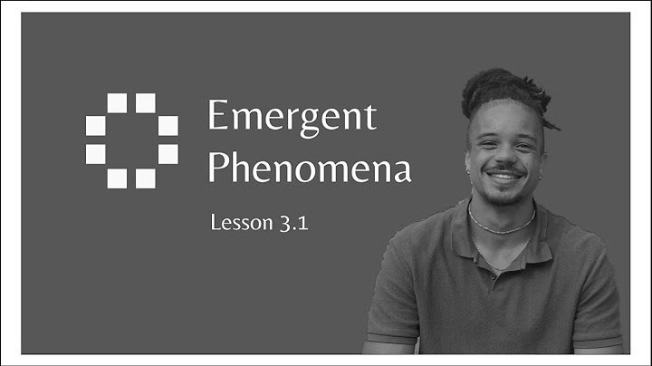
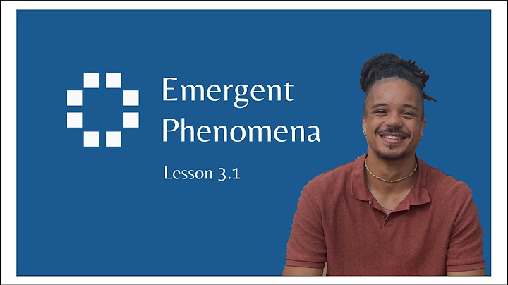
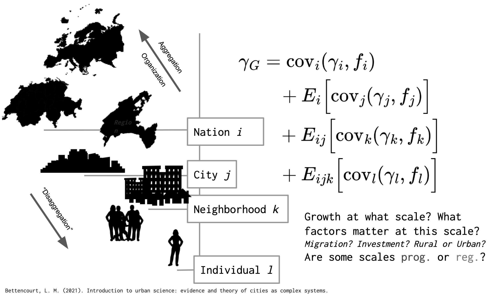
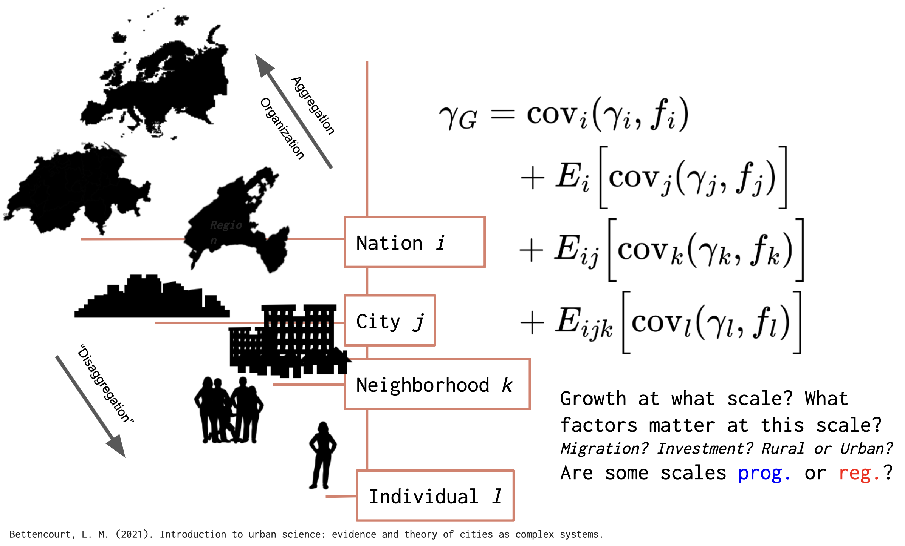
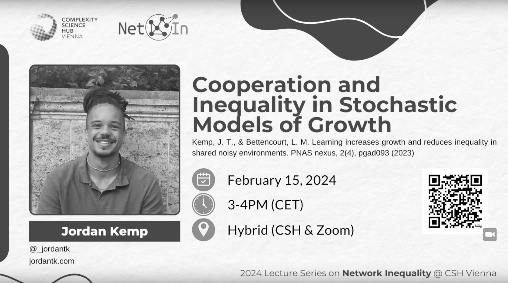
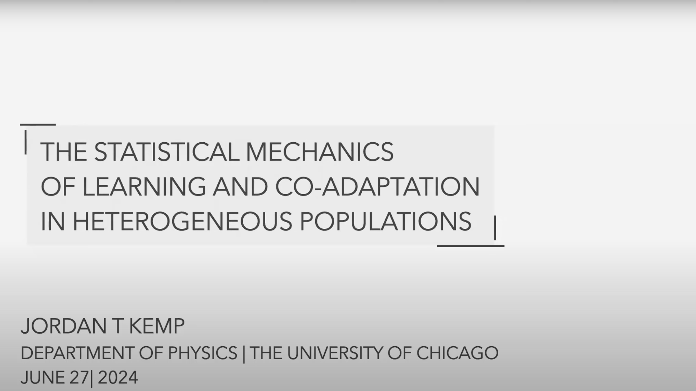
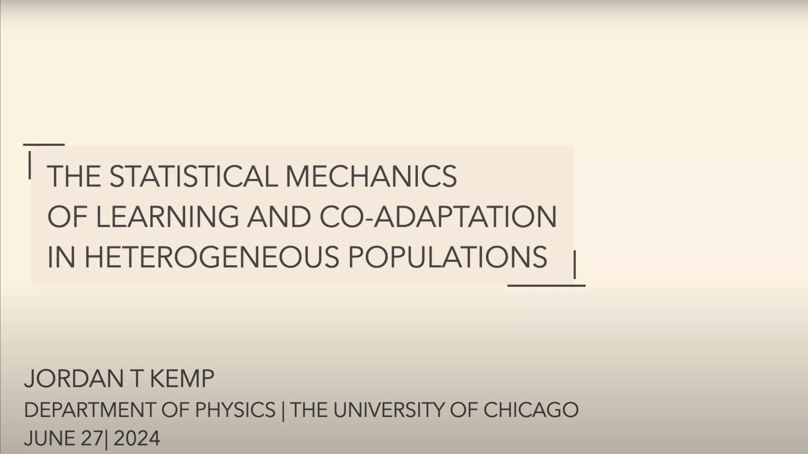

Lectures
Classroom setting talks
Emerging Phenomena in Complex Systems:
Sense, Sensibility, & Science, Spring 20245
Center for Spatial Data Science,
University of Chicago
April 8, 2025
University of Chicago
April 8, 2025


Join us for a lively and thought-provoking session from the University of Chicago's Center for Spatial Data Science. This lecture dives into the fascinating concept of emergence—how simple interactions at the micro level can give rise to complex patterns and behaviors at the macro level. The instructor sets the stage for upcoming experiments, blending theoretical grounding with practical setup. Along the way, you'll hear candid moments, student interactions, and glimpses of the behind-the-scenes dynamics of a collaborative learning environment. Whether you're new to complex systems or brushing up on foundational ideas, this session will inspire new ways of thinking about order, organization, and unexpected outcomes in social systems.
Slides
Links to slides from some unrecorded talks.
Spatial Relativity:
Emerging Tools for Studying Inequality Across Scales
Workshop on Wealth Inequality, Stone Center,
University of Chicago
March 26, 2025
University of Chicago
March 26, 2025


Here, I show how my dissertation work can strengthen spatial analyses of growth and inequality. The central theory of "Cooperation and Inequality in Stochastic Models of Growht" holds here, but I discuss its implications for spatial inequality.
Intended audience: Economists, social scientists.
Academic Talks
Fully recorded talks
Cooperation and Inequality in Stochastic Models of Growth
CSH Lecture Series on Network Inequality
Complexity Science Hub, Vienna, Austria
February 14, 2024
Complexity Science Hub, Vienna, Austria
February 14, 2024


Intended audience: Academic researchers interested in network science, inequality, and stochastic processes.
The Statistical Mechanics of Learning and Co-Adaptation
Dissertation Defense, Department of Physics
University of Chicago
June 27, 2024
University of Chicago
June 27, 2024


Intended audience: Statistical physicists, biophysicists, and machine learning researchers.
Find me on Google Scholar and Researchgate